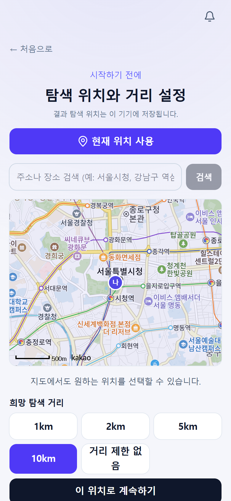
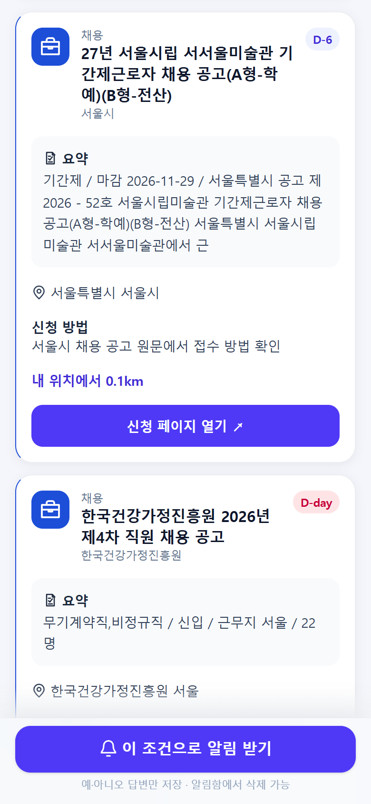
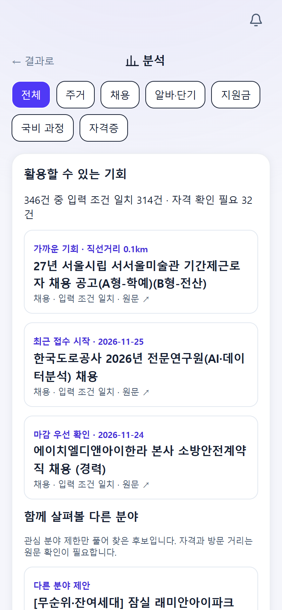

2026 대한민국 청년 CAREER FAIR AI 해커톤
My News
나만의 소식통
질문 몇 개로 조건을 저장하면
주거·채용·지원금 공고를 매일 다시 찾아 알려 주는 AI 에이전트
주거·채용·지원금 공고를 매일 다시 찾아 알려 주는 AI 에이전트


| 팀명 | [입력 필요] | 대표자 | [입력 필요] | 제출일 | 2026. 11. 23. |
| 팀명 | [입력 필요] | 대표자 | [입력 필요] | 제출일 | 2026. 11. 23. |


GPS·주소 검색·지도 찍기 → 반경 안 공고만
예/아니오·선택형 최대 12문항
남은 후보 수 실시간 표시
지도 핀 ↔ 카드 연동, 요약·신청 방법
조건 저장 시 새 공고만 푸시
* 서버 재조사·푸시는 로컬 자동 검사로 확인, 운영 환경 실측은 진행 중



실데이터 공고(약, 11/23 로컬 수집)
연결 공공 API(종)
질문 엔진 · 위치·반경 지도 · 카드 요약/신청 안내
조건 저장·재조사·Web Push · AI 캐시·무료 폴백
자동 검사(단위 테스트) 180개 통과 · 빌드 통과 (11/23)
운영 Cron·앱 종료 상태 푸시: 운영 실측 미완료